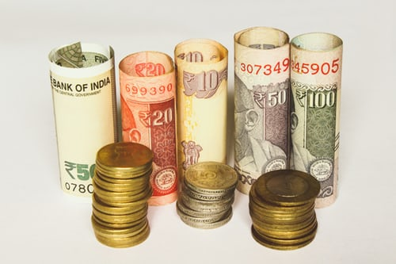

Bike riding uses minimal fossil fuels and is a pollution-free mode of transport.
Bikes reduce the need to build, service and dispose of cars.
Cycling 10 km each way to work would save 1500 kg of greenhouse gas emissions each year.
Also, as traffic delays and interruptions to traffic flow in
Australia's six major cities account for around 13 million tonnes of greenhouse gas emissions each year, cycling during peak hours would contribute to
further emission reductions by reducing congestion and improving traffic flow.
Economic benefits

Transport (15.5%) is second only to food (18.2%) as the largest item of household expenditure in Australia.
The family car costs up to 55 cents per kilometre to run.
In comparison, the cost of buying and maintaining a bike is around one per cent of the cost of buying and maintaining a car.
The family car costs on average 79 cents per kilometre to operate1.
comparison, the cost of buying and maintaining a bike is much cheaper, and even if you already own a car, a bicycle is more cost effective than driving if you ride at least 20 kilometres a week2.
out of 10 Queenslanders own a bike and more than half of all Queenslanders have a bike in working order in their household.
Using a bike for shorter trips may allow you to avoid buying a second car, which will save families thousands of dollars each year.
RACQ estimates that the cost of buying a new car every five years with an average mileage of 15 000 km per year varies from A$84.63 to A$194.90 per week.
Cycling 10 km each way to work each day will save about A$1700 per year in transport costs (including all running costs and depreciation).
Also, bicycle parking is usually free, easily accessible and more convenient than car parking.